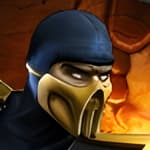
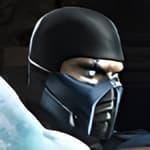
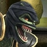
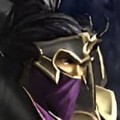
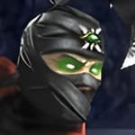
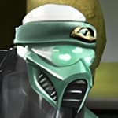
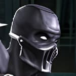
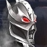
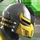
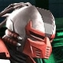
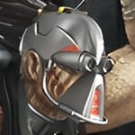
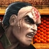
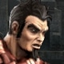
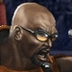
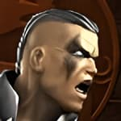
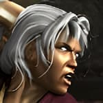
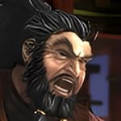
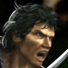
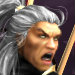
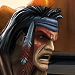
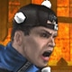
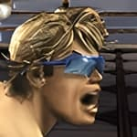
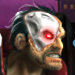
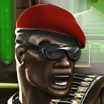
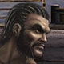
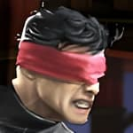
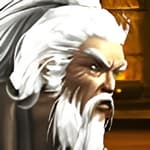
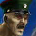
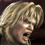
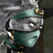
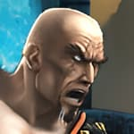
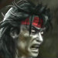
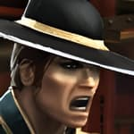
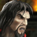
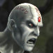
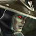
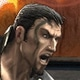
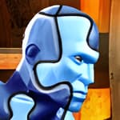
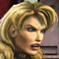
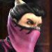
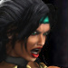
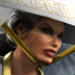
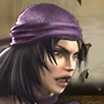
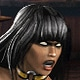
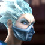
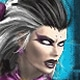
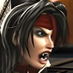
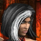
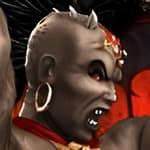
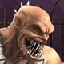
| Universal: 1 = Attack 1 2 = Attack 2 3 = Attack 3 4 = Attack 4 BL = Block/Ground Stall CS = Change Style TH = Throw GW = Grab Weapon |
WiiMote: 1 = Control Pad Left 2 = Control Pad Up 3 = Control Pad Down 4 = Control Pad Right BL = Z CS = C TH = A GW = 1 Pause/Movelist = + Initiate Special Move Gesture = B |
Info:
First Appearance: Mortal Kombat Deception (2004)
Origin: The Netherrealm
Alignment: Good / Forces of Light
Allies: Shujinko
Foes: Nitara, Noob Saibot, Brotherhood of the Shadow, Ermac
Fighting Style: Chou Jaio
Weapon: Kriss
Bio:
"I was condemned to the Netherrealm, a demon among demons. The kriss I discovered there offered a path to redemption. With every fiend slain by its blade, my soul grew purer, until I transcended that accursed realm. Celestial beings named me an ascending
demon and charged me to serve their sacred will: cleanse the realms of darkness and bring peace to those who suffer beneath its shadow.
My divine calling has brought me to Vaeternus, where vampires spread corruption unchecked. By the kriss, I shall purge this evil; each creature slain brings me closer to purity. Yet one has escaped my judgment: Nitara. I cannot allow her to evade my blade
forever. I shall not falter in my sacred duty, for only by destroying her can I complete my purification and ascend fully as a being of light."
Special Moves:
Heavenly Light:
Lightning Blast:
Spin Cycle:
Nature's Torpedo:
Info:
First Appearance: Mortal Kombat II (1993)
Origin: Outworld
Alignment: Evil / Forces of Darkness
Allies: Shao Kahn, Deadly Alliance, Dragon King
Foes: Bo Rai Cho
Fighting Style: Silat
Weapon: Blades
Bio:
"I am Baraka, leader of the Tarkatan hordes of Outworld. My people are feared for our savage nature and deadly arm blades. I have served Shao Kahn and other rulers who valued our strength, but my loyalty has always belonged to those who could secure our
place in Outworld. We do not beg for acceptance. We take what we need through strength and bloodshed.
Now I march with the Forces of Darkness, where power awaits those strong enough to seize it. I have no interest in the ideals of the weak or the promises of peace. My concern is the survival and dominance of the Tarkatans. With my blades leading the charge,
I will cut down any who stand in our way. Let the other realms learn what it means to face my people in battle."
Special Moves:
Flying Shard:
Mutant Blades:
Chop Chop Blades:
Info:
First Appearance: Mortal Kombat Deadly Alliance (2002)
Origin: Outworld
Alignment: Good / Forces of Light
Allies: Kung Lao, Kitana, Liu Kang
Foes: Shang Tsung, Quan Chi, Baraka, Shao Kahn
Fighting Style: Drunken Fist
Weapon: Jojutsu
Bio:
"Though I hail from Outworld, I have never embraced the cruelty of its rulers. I rejected Shao Kahn's tyranny and devoted myself to training Earthrealm's defenders, including Liu Kang. Some mistake my fondness for drink and my unorthodox methods for foolishness,
but do not be deceived. Beneath my unruly exterior lies a lifetime of martial discipline and wisdom earned through countless battles.
Now the realms face a conflict that threatens to consume us all. I stand with those who would defend them, for I will not allow ambition and bloodlust to decide the fate of countless lives. Though I have long guided others rather than entered Mortal Kombat
myself, there comes a time when even a teacher must take up arms. Let my enemies beware: this old master still has a few lessons to teach."
Special Moves:
Puke Puddle:
Monkey Flips:
Belly Bash:
Earthquake:
Info:
First Appearance: Mortal Kombat Trilogy (1996) - PlayStation/Sega Saturn Versions
Origin: Zaterra (assumed)
Alignment: Evil / Forces of Darkness
Allies: Shao Kahn
Foes: Anyone opposed to Shao Kahn
Fighting Style: Crane
Weapon: Ninja Sword
Bio:
"I am Chameleon, one of the last surviving Saurians of Zaterra. When Shao Kahn conquered our realm, my people were scattered and nearly erased from existence. I survived by mastering concealment, blending into the shadows while the great warriors of the
realms fought their endless wars. I have watched empires rise and fall, revealing neither my presence nor my intentions.
Now I emerge from the shadows as the realms approach their final battle. I have mastered the fighting styles of many warriors, adapting my form and tactics to exploit any opponent's weakness. I serve the Forces of Darkness, but my true purpose remains
my own. Let others reveal their ambitions and expose their weaknesses. I have waited long enough; now I shall make my move."
Special Moves:
Green Wave:
Lizard Lighting:
Speedy Serpent:
Vanishing Kick:
Freezing Charge:
Info:
First Appearance: Mortal Kombat 3 (1995)
Origin: Earthrealm
Alignment: Good / Forces of Light
Allies: Sonya, Jax, Kenshi, Nitara
Foes: Sektor/Tekunin, Black/Red Dragon
Fighting Style: Ninjitsu
Weapon: Pulse Blade
Bio:
"I was once a human warrior of the Lin Kuei, until the clan stripped me of my humanity and transformed me into LK-4D4, a cybernetic assassin. Yet I eventually broke free from their control. With the help of Jax and Sonya, I regained my human form and found
a new purpose serving the Special Forces. I now use the skills once forced upon me to defend Earthrealm.
My former clan has not forgotten my defection. Sektor sees me as a failure of the cybernetic program and a threat to the Lin Kuei's future. Let him come. I have fought too hard to reclaim my freedom to surrender it again. As the realms descend toward their
final battle, I stand with the Forces of Light, determined to protect Earthrealm and prove that no machine can extinguish the human will."
Special Moves:
Detonator - Far:
Detonator - Close:
Funky Spin Kicks:
Exploding Teleport:
Slice and Dice:
Info:
First Appearance: Mortal Kombat Deception (2004)
Origin: Realm of Order (Seido)
Alignment: Neutral / Forces of Darkness
Allies: Darrius, Damashi
Foes: Hotaru
Fighting Style: Mi Zong
Weapon: Autumn Dao
Bio:
"I once served as a guardsman of Seido, believing in the order I was sworn to uphold. That faith ended when my family was murdered and deception led me to kill an innocent man. Branded a criminal, I endured imprisonment and torture at the hands of my own
people. I escaped and abandoned their laws. Now I sell my skills as a mercenary, bound by no code but my own interests.
The coming battle offers opportunities for those willing to seize them, and I intend to profit. I fight alongside the Forces of Darkness, but make no mistake: my allegiance is not born of faith or loyalty. I have seen what justice is worth when those in
power control it. I take the contracts that serve me, and when the price is right, I strike without hesitation. In a world ruled by treachery, survival is the only law I trust."
Special Moves:
Tombstone Drop:
Stealthy Shadows:
Iron Leg:
Info:
First Appearance: Mortal Kombat Deception (2004)
Origin: Realm of Order (Seido)
Alignment: Neutral / Forces of Darkness
Allies: Havik
Foes: Hotaru
Fighting Style: Goju Ryu
Weapon: Gauntlets
Bio:
"I once served Seido as a guardsman, until I saw the truth behind its vaunted laws. Orderrealm's rulers preach justice while using their laws to preserve their own power. I abandoned my post and began building a resistance, recruiting those willing to
challenge the system. We strike with purpose, using disruption to weaken the establishment. To free my people, the old order must fall.
The coming battle offers the opportunity I have long awaited. I stand with the Forces of Darkness because their victory could shatter Seido's grip on its people. Hotaru, that blind servant of order, will oppose me at every turn, but I will not be deterred.
I seek neither chaos for its own sake nor power for personal glory. I will tear down this corrupt system and ensure its laws never again chain my people."
Special Moves:
Tricky Blast:
Twisty Kick:
Chest Cruncher:
Target Practice:
Info:
First Appearance: Mortal Kombat Deadly Alliance (2002)
Origin: The Netherrealm
Alignment: Evil / Forces of Darkness
Allies: Moloch
Foes: Scorpion, Quan Chi
Fighting Style: Hung Gar
Weapon: Iron Club
Bio:
"I was once a cruel landlord, condemned to the Netherrealm for my wickedness. There, torment stripped away what remained of my humanity and remade me as an Oni. I embraced my new existence, mastering the art of suffering through centuries of torment. My
rotting flesh and the flies that swarm around me are marks of what I have become. I am Drahmin, and mercy has no place in my world.
Now the realms stand on the brink of a slaughter unlike any other. I join the Forces of Darkness with Moloch at my side, eager to unleash suffering upon every foe who crosses our path. I care nothing for crowns, kingdoms, or the schemes of sorcerers. Let
others fight for power; I fight because agony delights me. The coming battle will provide more victims than the Netherrealm could ever offer, and I intend to savor every moment."
Special Moves:
Ball-O-Flies:
Propeller Clock:
Rising Uppercut:
Ground Smash:
Info:
First Appearance: Ultimate Mortal Kombat 3 (1996)
Origin: Outworld (Created by Shao Kahn)
Alignment: Good / Forces of Light
Allies: Kenshi, Liu Kang
Foes: Dragon King, Ashrah
Fighting Style: Choy Lay Fut
Weapon: Axe
Bio:
"We are Ermac, a multitude of souls bound together by Shao Kahn's sorcery. Forged from fallen warriors, we served as his enforcers, our combined power making us a formidable weapon. Yet within this single body, countless voices struggled for control. We
knew only servitude until Kenshi freed us from Kahn's influence, granting us the chance to discover who we are without a master to command us.
We now stand with the Forces of Light, though our path is not one of blind allegiance. We seek to understand our existence and determine whether we are merely a weapon or a being with a will of our own. The coming battle may hold answers, or it may consume
us entirely. We are many, yet we must choose our own fate. Let the realms witness what Ermac has become."
Special Moves:
Mystic Float:
Mystic Bomb:
Dive Kick:
Telekinetic Throw:
Hado-Energy:
Telekinetic Slam:
Info:
First Appearance: Mortal Kombat Deadly Alliance (2002)
Origin: Born in Earthrealm, ancestors from Outworld
Alignment: Evil / Forces of Darkness
Allies: Unknown
Foes: Sub-Zero, Sonya
Fighting Style: Tong Bei
Weapon: Daggers
Bio:
"Sub-Zero recognized my talent and took me as his apprentice, yet he insisted on holding me back with his outdated traditions. I sought the power of his Dragon Medallion, a power I knew I deserved. When its magic encased me in ice, my master left me behind
rather than reclaim me. He mistook my temporary defeat for weakness. He will learn how badly he underestimated me.
Now I have returned, stronger and more determined than ever to surpass Sub-Zero. I have allied myself with the Forces of Darkness, whose power will help me reshape the Lin Kuei in my image. His precious clan will no longer be shackled by restraint and
false honor. I will prove myself its rightful leader, and my former master will kneel before the warrior he should have feared all along."
Special Moves:
Ground Freeze:
Frosty Slide:
Teleporting Uppercut:
Ice Puddle:
Info:
First Appearance: Mortal Kombat 4 (1998)
Origin: The Heavens
Alignment: Good / Forces of Light
Allies: Kung Lao
Foes: Shinnok
Fighting Style: Liu He
Weapon: Devastator
Bio:
"I have watched Raiden change, and the god I once called friend has become a stranger. His ruthless methods remind me of Shao Kahn, while Liu Kang's reanimated corpse serves as his enforcer. Kung Lao and I have joined forces to confront them. I still hope
to save our former allies, but if their corruption cannot be undone, we may be forced to end their reign ourselves.
At Johnny Cage's gathering, I learned of Shinnok's return and heard Kenshi speak of Taven and Daegon, brothers I knew long ago. When they vanished, Argus told me only that they would bring about a new world. I now fear his plans have been corrupted by
evil. I must intercept the brothers and uncover the truth before their mysterious quest brings disaster upon the realms."
Special Moves:
Wind Kick: (In Air)
Air Funnel:
Gusting Cyclone:
Tornado Wind:
Info:
First Appearance: Mortal Kombat (1992)
Origin: Outworld
Alignment: Evil / Forces of Darkness
Allies: Shao Kahn
Foes: Baraka, Kitana
Fighting Style: Shokan
Weapon: Dragon Fangs
Bio:
"I am Goro, Prince of the Shokan, and for centuries I served Shao Kahn as one of his greatest champions. My strength brought victory to Outworld, and my people earned honor through their service to the emperor. Though I was believed dead after my defeat
at the hands of Liu Kang, I survived. I would not allow one defeat to end my legacy or diminish the might of the Shokan.
I stood beside Shao Kahn when he reclaimed his throne, helping crush the Edenian forces that dared oppose him. Now I defend his stronghold against those who would challenge his rule. I fight with the Forces of Darkness, not as a servant without pride,
but as a prince determined to preserve his people's power. Let our enemies come. They will learn why the Shokan have been feared for generations."
Special Moves:
Ultimate Force:
Spinning Slaps:
Tremor Pound:
Leaping Stomp:
Info:
First Appearance: Mortal Kombat Deception (2004)
Origin: Realm of Chaos
Alignment: Neutral / Forces of Darkness
Allies: Kabal, Kira, Kobra, Darrius
Foes: Hotaru, Dragon King
Fighting Style: Tang Soo Do
Weapon: Morning Star
Bio:
"I am Havik, cleric of Chaosrealm, where disorder is not a flaw but the natural state of existence. The rigid laws of Orderrealm are a blight upon reality, smothering freedom beneath rules and control. I devote myself to shattering these chains, using
whatever means necessary to spread chaos and awaken others to the truth. To me, destruction is not an end, but liberation.
I fight alongside the Forces of Darkness, though their ambitions mean little to me. Their victory may weaken the structures that bind the realms, creating opportunities for chaos to flourish. I have no desire to replace one master with another or impose
a new order upon existence. I seek a reality free from certainty, where nothing is fixed and everything can change. Only then will true freedom reign."
Special Moves:
Torso Spin:
Diving Corpse:
Crackling Legs Projectile:
Head Snap: (Restores Health)
Corpse Taunt: (Restores Health)
Info:
First Appearance: Mortal Kombat Deception (2004)
Origin: Realm of Order (Seido)
Alignment: Neutral / Forces of Darkness
Allies: Dragon King
Foes: Dairou, Sub-Zero, Darrius
Fighting Style: Pi Gua
Weapon: Naginata
Bio:
"I am Hotaru, a general of Seido, sworn to uphold law and order above all else. To me, chaos is a disease that spreads when discipline falters and authority is challenged. I have devoted my life to enforcing the laws of my realm, bringing rebels to justice
and preserving the hierarchy that sustains civilization. Mercy toward those who threaten order only invites further disorder.
I once fought to maintain peace in Outworld, but now I believe Onaga's return offers the realms their best hope of restoring order. I have joined the Forces of Darkness, convinced that the Dragon King can establish the authority others have failed to maintain.
Those who oppose his rule, including Sub-Zero, will answer for their defiance. I will see order restored, regardless of the cost or whose ambitions must be crushed."
Special Moves:
Grasshopper:
Fury Punch and Escape:
Quick Tricks:
Lava Burst:
Info:
First Appearance: Mortal Kombat Deadly Alliance (2002)
Origin: Earthrealm
Alignment: Evil / Forces of Darkness
Allies: Mavado, Red Dragon
Foes: Black Dragon, Special Forces
Fighting Style: Sumo
Weapon: Sunmoon Blades
Bio:
"I am Hsu Hao, a loyal operative of the Red Dragon Clan. My mission was to infiltrate the Outer World Investigation Agency, posing as a member of the Special Forces while secretly serving my true masters. When the time came, I betrayed the agency and destroyed
its underground base. Jax believed he had killed me, but Red Dragon technology rebuilt my shattered body, leaving me stronger and more dangerous than before.
Now I serve Daegon and the Red Dragon's ambitions, fighting alongside the Forces of Darkness to claim the power hidden within Blaze. I hold Jax and the Special Forces responsible for standing in our way, and I intend to make them pay. My cybernetic heart
keeps me alive, but my hatred gives me purpose. I will help crush our enemies and ensure the Red Dragon rises to power."
Special Moves:
Thunder Klap:
Boot Kamp:
Charge Up:
Bouncing Death:
Krystal Lazer:
Info:
First Appearance: Mortal Kombat II (1993)
Origin: Edenia
Alignment: Good / Forces of Light
Allies: Kitana, Sindel
Foes: Tanya, Mileena
Fighting Style: Fan Zi
Weapon: Bojutsu
Bio:
"My loyalty to Edenia and Princess Kitana has never wavered. Though I once served Shao Kahn, I defied him when I refused to take part in an attempt on Kitana's life. Since then, I have dedicated myself to protecting Edenia's royal family and defending
our people from those who would threaten them. I trust few, for betrayal has taught me the cost of misplaced faith.
I now fight alongside the Forces of Light to protect Edenia and secure its future. Tanya's repeated treachery has made her a threat I cannot ignore, and I will not allow her to endanger Kitana or our kingdom again. My skills in stealth and combat are at
the service of my people, and I will stand against anyone who threatens them. Edenia has suffered enough. I will not let it fall."
Special Moves:
Vanishing Winds:
Blazing Nitro Kick:
Razor-Rang:
Dodging Shadows:
Info:
First Appearance: Mortal Kombat 4 (1998)
Origin: Earthrealm
Alignment: Evil / Forces of Darkness
Allies: Kano, Kabal
Foes: Sonya, Jax, Shinnok
Fighting Style: Dragon
Weapon: Kick Axe
Bio:
"I am Jarek, a ruthless member of the Black Dragon Clan, accustomed to surviving by any means necessary. My criminal life brought me into conflict with the Special Forces, and Jax nearly ended it when he hurled me into a ravine. I survived the fall, however,
and escaped the fate my enemies believed I deserved. I have neither forgotten nor forgiven those who tried to destroy me.
Quan Chi has offered me a chance to sharpen my deadliest techniques in exchange for serving the Forces of Darkness, and I have accepted. I care little for their grand ambitions; this alliance gives me the opportunity to grow more dangerous and settle old
scores. Jax remains a target, and I intend to prove that his attempt to kill me was a mistake. I survived once. I will not be so easily stopped again."
Special Moves:
Lasso Snatch:
Tricky Switch:
Rhino Stomp:
Flying Legs:
Info:
First Appearance: Mortal Kombat II (1993)
Origin: Earthrealm
Alignment: Good / Forces of Light
Allies: Sonya Blade
Foes: Kano, Hsu Hao
Fighting Style: Muay Thai
Weapon: Tonfa
Bio:
"I've faced plenty of bad situations in my career, but Sektor's Tekunin pushed things too far. They captured me during the mission to destroy their warship, enhanced my cybernetics, and messed with my head until I could barely remember Sonya or my own
unit. They wanted a weapon they could control. For a while, that's exactly what they had. But they made one mistake: they underestimated me.
I got out during a Red Dragon raid, and now I'm back in the fight with the Forces of Light. The Tekunin programming is still in my system, but I'm not about to let Sektor turn me against my own people. Earthrealm is my responsibility, and I'll be damned
if I let some cybernetic wannabe take that away from me. I've beaten the odds before. I'll do it again."
Special Moves:
Piston Punches:
Ground Pound:
Machine Gun:
Info:
First Appearance: Mortal Kombat (1992)
Origin: Earthrealm
Alignment: Good / Forces of Light
Allies: Liu Kang, Sonya, Raiden
Foes: Shang Tsung, Goro, Movie Critics
Fighting Style: Shorin Ryu
Weapon: Nunchaku
Bio:
"I've fought alongside Earthrealm's greatest warriors, usually with Raiden calling the shots and Liu Kang saving the day. But things have gone seriously sideways. Raiden has changed, Liu Kang is gone, and our old team is falling apart. Then I started having
visions of Shinnok, a fallen Elder God who's apparently making his move again. And trust me, this isn't some movie script.
I tracked Shinnok to Shang Tsung's fortress and discovered he was working with Quan Chi to rebuild his power. I tried to stop him, but he got away. So now it's on me to bring the Forces of Light back together before Shinnok gets what he wants. I may be
an action star, but protecting Earthrealm is no stunt. This time, the fate of the realms is riding on us."
Special Moves:
Sliding Uppercut:
Plasmic Fireball:
Shadow Kick:
Info:
First Appearance: Mortal Kombat 3 (1995)
Origin: Earthrealm
Alignment: Evil / Forces of Darkness
Allies: Kano
Foes: Mavado
Fighting Style: Sun n
Weapon: Hookswords
Bio:
"I used to be one of the Black Dragon's most dangerous enforcers, and surviving Shao Kahn's invasion left me scarred but not beaten. Mavado nearly finished the job when he ambushed me and stole my hookswords. I could have given up, but Havik showed me
another path. I decided survival wasn't enough. If the Black Dragon was going to rise again, it needed a leader who knew what weakness cost.
Kira and Kobra have joined me, and together we're rebuilding the clan into a force that values strength, cunning, and results. I don't care about playing the hero or serving anyone's grand ideals. The Forces of Darkness offer an opportunity, and I intend
to use it. The Black Dragon answers to me now, and anyone who thinks we're finished is about to learn how wrong they are."
Special Moves:
Raging Flash:
Plasma Blast:
Nomad's Touch:
Info:
First Appearance: Mortal Kombat 4 (1998)
Origin: Earthrealm
Alignment: Good / Forces of Light
Allies: Raiden, Liu Kang, Kung Lao
Foes: Quan Chi, Tanya, Shinnok
Fighting Style: Moi Fah
Weapon: Spiked Club
Bio:
"The White Lotus Society taught me that true strength begins with discipline. Under Liu Kang's guidance, I learned to master my body, quiet my mind, and channel the fire within me. His fall was a painful reminder that even the greatest warriors can be
lost. I continue to travel the realms, testing my abilities and seeking the wisdom needed to become more than a skilled fighter. My training is far from complete.
The coming battle threatens to plunge the realms into destruction. I stand with the Forces of Light, not out of blind loyalty, but because the balance of existence must be preserved. A warrior must know when to fight and why. I will face whatever challenges
lie ahead with discipline and resolve, trusting in my training while remaining open to the lessons each battle may teach me. My path continues, and I will not turn away from it."
Special Moves:
Fire From Above:
Downward Fire Blast: (Also in Air)
Renegade Kick:
Rising Heel:
Info:
First Appearance: Mortal Kombat (1992)
Origin: Earthrealm
Alignment: Evil / Forces of Darkness
Allies: Kabal, Jarek
Foes: Sonya, Jax, Mavado
Fighting Style: Xing Yi
Weapon: Butterfly
Bio:
"Oi, I've always had a knack for survival, and this coming battle's no different. A bloke like me - crooked, crude, and bloody rotten - might seem out of place in a world that's gone to hell, but I've never been one to miss an opportunity. I've led the
Black Dragon, run merc jobs, and crossed more dangerous people than I can count. Life's a gamble, mate, and I always keep an ace up me sleeve.
The Red Dragon had me locked up, treating me like a bloody lab rat for their human-dragon experiments. Thought they could turn me into one of their freaks, did they? Not bloody likely. I got out, and now I'm back in business with the Forces of Darkness.
Loyalty's for mugs, and I don't fight for anyone's cause but my own. When the dust settles, I'll be alive, rich, and laughing while the poor bastards who trusted the wrong bloke lie in the dirt."
Special Moves:
Inner Rage:
Fist of Power:
Cannon Ball:
Eye Laser:
Info:
First Appearance: Mortal Kombat Deadly Alliance (2002)
Origin: Earthrealm
Alignment: Good / Forces of Light
Allies: Sonya, Jax, Sub-Zero
Foes: Shang Tsung
Fighting Style: Tai Chi
Weapon: Katana
Bio:
"I once wandered Japan, challenging its greatest warriors, driven by a single ambition: to become the best. Shang Tsung revealed my royal heritage and tricked me into opening the tomb of my ancestors. He devoured their souls, blinded me, and left me to
die. I survived, and the sword of Sento became my guide. Though sight was taken from me, I learned to perceive what others cannot and wield powers beyond the sword itself.
I later uncovered the Red Dragon Clan's activities and learned of their interest in Taven. A psychic vision revealed a connection between Taven and Daegon, convincing me that a greater threat was unfolding. I initially refused Johnny Cage's invitation,
but the sword of Sento urged me to act. I will now lead the Forces of Light into the coming battle, guided by my ancestors' wisdom and determined to confront the danger threatening the realms."
Special Moves:
Telekinetic Slam:
Telekinetic Toss:
Telekinetic Push:
Tele-Flurry:
Mind Warp:
Info:
First Appearance: Mortal Kombat II (1993)
Origin: Outworld
Alignment: Evil / Forces of Darkness
Allies: Shao Kahn
Foes: Raiden
Fighting Style: Tiger Fist
Weapon: Saber Teeth
Bio:
"I am Kintaro of the Tigrar-Shokan, born in Kuatan and bred for battle. I have served Shao Kahn with unwavering ferocity, crushing those who dared challenge his rule. Goro may be the more celebrated Shokan warrior, but I have never accepted being second
to anyone. My strength is my answer to every rival, and I show no mercy to those who mistake my silence for weakness.
When Goro fell, I fought to uphold Kahn's might, only to suffer defeat at the hands of Liu Kang. That humiliation has never left me. Now resurrected alongside Goro and Sheeva, I return to battle with the Forces of Darkness. I will prove my strength through
the bodies of our enemies, defend the emperor's dominion, and remind every realm why the Shokan are feared. Those who stand against us will learn the price of defiance."
Special Moves:
Breathe:
4 Armed Grab:
Fiery Hands:
Shokan Roar:
Info:
First Appearance: Mortal Kombat Deception (2004)
Origin: Earthrealm
Alignment: Evil / Forces of Darkness
Allies: Kabal, Kobra
Foes: Shujinko and his allies
Fighting Style: Yuan Yang
Weapon: Dragon Teeth
Bio:
"I was the first of Kabal's recruits. In Afghanistan, I sold weapons to terrorists while disguised as a man. When the Red Dragon discovered my identity, I fought my way out of the cave. Kabal was waiting when I emerged, impressed by my survival. He offered
me a place in his new Black Dragon, and I accepted. I had proven I could survive among killers.
Now I serve as Kabal's second-in-command? No - his first recruit, helping him rebuild the Black Dragon into a ruthless, calculating force. In the Botan Jungle, Kobra and I acted on Kabal's signal to ambush Red Dragon scouts. That operation was only the
beginning. With the final battle approaching, I stand with the Forces of Darkness, ready to seize every opportunity to advance the Black Dragon's ambitions."
Special Moves:
Black Dragon Ball:
Kiss of Death:
Nightshade:
Info:
First Appearance: Mortal Kombat II (1993)
Origin: Edenia
Alignment: Good / Forces of Light
Allies: Liu Kang, Sindel, Jade
Foes: Shao Kahn, Mileena
Fighting Style: Ba Gua
Weapon: Steel Fan
Bio:
"For ten thousand years, I lived under Shao Kahn's rule, raised as his daughter and trained to serve as his assassin. The truth of my Edenian heritage shattered the life he had built for me, and my mother Sindel's death left wounds that time could not
erase. Though she was later restored and redeemed, the past remains with me. I will never forget what was taken from Edenia.
Liu Kang freed me from Onaga's control, allowing me to return home. Warned by Blaze of the threat facing the realms, I now stand with the Forces of Light to protect Edenia and all who may be lost in the coming battle. Liu Kang's absence weighs heavily
on me, but I will not surrender to grief. I will face whatever comes and defend my people, whatever the cost."
Special Moves:
Pretty Kick:
Fan Lift:
Ground Fan:
Pixie Dust Teleport:
Square Wave Punch:
Info:
First Appearance: Mortal Kombat Deception (2004)
Origin: Earthrealm
Alignment: Evil / Forces of Darkness
Allies: Kira, Kabal
Foes: Shujinko and his allies
Fighting Style: Kickboxing
Weapon: Machete
Bio:
"I was a street thug long before Kabal recruited me into the new Black Dragon. My martial arts skills and violent instincts made me a natural fit for the clan. Under Kabal's command, I found an organization where strength matters more than rules and brutality
is rewarded. Alongside Kira, I serve a leader determined to rebuild the Black Dragon into something far more dangerous than it ever was.
In the Botan Jungle, Kira and I acted on Kabal's signal to ambush Red Dragon scouts. That mission was only one step in the Black Dragon's rise. Now I stand with the Forces of Darkness in the coming battle, eager to test my skills against the strongest
warriors in the realms. Every fight is an opportunity to grow stronger, earn my place, and prove that I belong among the deadliest fighters alive."
Special Moves:
Windmill Kick:
Burning Fist:
Tele-Punch:
Chi-Blast:
Chi-Blast - Low:
Info:
First Appearance: Mortal Kombat II (1993)
Origin: Earthrealm
Alignment: Good / Forces of Light
Allies: Liu Kang, Fujin
Foes: Shang Tsung, Shao Kahn
Fighting Style: Shaolin Fist
Weapon: Broadsword
Bio:
"My ancestor's legacy has always been a source of pride, but I have fought to prove myself in my own right. Liu Kang was my friend, fellow Shaolin monk, and trusted ally. His death has left a void that no warrior can fill. Now Fujin and I watch Raiden's
growing darkness with grave concern. The Thunder God has changed, and I fear what may happen if we cannot bring him back from the path he has chosen.
I stand with the Forces of Light, my razor-edged hat ready as the realms approach their greatest crisis. I fight to protect Earthrealm, honor Liu Kang's memory, and preserve the values we once shared. Yet my loyalty has limits, even where old friendships
are concerned. If Raiden cannot be stopped by reason, Fujin and I may have no choice but to stand against him."
Special Moves:
Whirlwind Kicks:
Hat Throw:
Wind Teleport:
L = Hand Bash
U = Fist Smash
D = Fake Kick
R = Kick
Air Dive Kick: (In Air)
Info:
First Appearance: Mortal Kombat Deadly Alliance (2002)
Origin: Outworld
Alignment: Good / Forces of Light
Allies: Bo' Rai Cho
Foes: Shang Tsung, Quan Chi, Kano
Fighting Style: Lui He Ba Fa
Weapon: Kunlun Dao
Bio:
"My village was sacrificed to Shang Tsung's flesh pits, its people slaughtered so their souls could restore his power. I was to become another vessel for his sorcery, but Onaga intervened, sparing me only to bind my soul to his service. Under his control,
I became an enslaved warrior until Shujinko helped me reclaim my freedom. I survived, but the suffering of my people will never leave me.
Now I fight alongside the Forces of Light, determined to protect the innocent from those who would exploit them. I know what it means to have your freedom stolen and your life treated as a tool for another's ambition. I will not allow others to suffer
as my village did. The coming battle threatens every realm, and I will face it with courage, fighting for justice and for those who cannot defend themselves."
Special Moves:
Nova Blast:
Carnival Spin:
Flying Flurry:
Flipping Heel Kick:
Info:
First Appearance: Mortal Kombat (1992)
Origin: Earthrealm
Alignment: Good / Forces of Light
Allies: Raiden, Kung Lao
Foes: Shang Tsung, Quan Chi, Shinnok, Tanya, Dragon King
Fighting Style: Jun Fan
Weapon: Nunchaku
Bio:
"Shang Tsung killed me and stole my soul, leaving my body behind. Raiden's devastating blast later reanimated my corpse, but I was not restored to life. Instead, my body became an instrument of Raiden's darkened will, attacking those it was meant to protect.
Trapped as a spirit, I could only watch as my former body carried out deeds I would never have committed.
My bond with Kitana kept my spirit connected to the living world until Nightwolf became my spiritual anchor, taking her place. Through him, I hope to find peace and help defeat the darkness threatening the realms. Though my body remains under Raiden's
control, my heart and purpose remain true to the Forces of Light. I will fight to restore what was lost and protect Earthrealm's future."
Special Moves:
High Dragon Fire:
Low Dragon Fire:
Flying Kick:
Flying Bicycle Kick:
Info:
First Appearance: Mortal Kombat Deadly Alliance (2002)
Origin: Earthrealm
Alignment: Evil / Forces of Darkness
Allies: Hsu Hao, Daegon
Foes: Black Dragon, Special Forces
Fighting Style: Long Fist
Weapon: Hookswords
Bio:
"I lead the Red Dragon Clan, pursuing power and the destruction of our enemies. For years, I hunted the Black Dragon, determined to eliminate our rivals. My victory over Kabal left me with his hookswords and the belief that I had dealt a decisive blow
to the clan. Yet survival is the measure of a true warrior, and even a defeated enemy can return to threaten everything I have built.
When our clan located Blaze, Daegon ordered me to kill his brother, Taven, while he prepared to act on his own plans. Taven defeated me, but I escaped using my concealed escape grapple. I have survived, and now I stand with the Forces of Darkness in the
final battle. My allegiance serves the Red Dragon's ambitions, and I will use every advantage to secure our supremacy over those who stand in our way."
Special Moves:
Grapple Hook Strike:
Change Sides Hook:
Anger Management:
Low Grapple Slide:
Escape Grapple:
Info:
First Appearance: Mortal Kombat II (1993)
Origin: Outworld
Alignment: Evil / Forces of Darkness
Allies: Baraka, Shang Tsung
Foes: Kitana
Fighting Style: Mian Chuan
Weapon: Sai
Bio:
"Outworld was mine! Posing as Kitana, I seized her Edenian army and took control of Shao Kahn's fortress in the name of “peace.” I planned to corrupt its soldiers until they followed me as their true conqueror. But Shao Kahn returned with Goro and Shang
Tsung, my creator, and crushed the defenders. I feigned surrender, welcoming my master home while hiding my fury and waiting for another chance.
Shao Kahn ordered me to capture Shujinko as a bargaining chip for an alliance with Onaga. I lured him to the fortress, defeated him, and had him thrown into the dungeon. Yet I have no desire to serve Shao Kahn forever. I once held a realm in my grasp,
and I will rise again. Outworld may be beyond my reach while he rules, but Edenia is ripe for conquest. Its throne will be mine, and all who oppose me will pay."
Special Moves:
Rolling Thunder:
Soaring Sai:
Kick From Above:
Info:
First Appearance: Mortal Kombat Deadly Alliance (2002)
Origin: Earthrealm
Alignment: Good / Forces of Light
Allies: Johnny Cage
Foes: Jackie Chan
Fighting Styles: Jeet Kune Do / Wing Chun
Weapon: N/A
Bio:
"I was a martial arts teacher on Chicago's North Side before Johnny Cage called me to Hollywood for motion-capture work on Mortal Kombat: Deadly Alliance. My sessions began with the Crane and Snake styles, but my knowledge of many fighting techniques kept
bringing me back. To the world, I was Mokap, the man behind the scenes, helping digital warriors move and fight convincingly on screen very well.
Then a strange surge of energy changed my life, giving me the ability to channel the skills and essence of the fighters I had portrayed. Now I stand with the Forces of Light as the realms face their final battle. I may be an unlikely hero, but I can draw
on the moves of legendary kombatants. I'll use this gift to help protect the realms, even if I never expected to fight beyond a movie set at all."
Special Moves:
Magic Lift:
Power Hands:
Swan Kick:
Lights, Camera, Action:
Info:
First Appearance: Mortal Kombat Deadly Alliance (2002)
Origin: The Netherrealm
Alignment: Evil / Forces of Darkness
Allies: Drahmin
Foes: Scorpion, Quan Chi
Fighting Style: Moloch
Weapon: N/A
Bio:
"I am Moloch, a monstrous Oni from the Netherrealm, known for immense strength and a taste for destruction. Alongside Drahmin, I served as one of Quan Chi's Oni Tormentors, crushing those who dared defy our master. I have little interest in schemes or
grand designs. The sound of bone breaking beneath my club is reward enough, and fear follows wherever I go. I have no patience for mercy or weakness.
Now I fight for the Forces of Darkness as the realms approach their final battle. I care little for who rules or what becomes of the worlds; I want only the chance to unleash my strength. The coming conflict promises more opponents than I could ever hope
to count, and I intend to enjoy every moment. I will smash, crush, and kill until nothing remains to challenge me. I need nothing else from life."
Special Moves:
Power Ball:
Super Charge:
Ragin' Oni:
Beast Lord:
Furious Howl:
Ground Bash:
Suction Breath:
Info:
First Appearance: Mortal Kombat 3 (1995)
Origin: Outworld
Alignment: Evil / Forces of Darkness
Allies: Shao Kahn
Foes: Those against Shao Kahn, Shokan
Fighting Style: Horse
Weapon: N/A
Bio:
"I am Motaro, leader of Shao Kahn's extermination squads and a proud son of the Centaurians. The Shokan's treachery stripped me of my true form, forcing me onto these cursed legs. Every step reminds me of their arrogance and fuels my hatred. I have slain
many Earthrealm warriors in Kahn's service, yet my strength cannot erase the humiliation of my transformation. I will never forgive those responsible.
Now the final battle draws near, and I see an opportunity to settle my score with the Shokan. Goro, Kintaro, and Sheeva will answer for what was done to my people and to me. I remain loyal to Shao Kahn, serving his cause as I always have, though my own
desire for vengeance burns beneath that loyalty. Let the Shokan mistake my altered form for weakness. I will prove that Motaro remains a force to be feared."
Special Moves:
Power Charge:
Donkey Kick:
Teleport:
Mount Stance:
L: Tail Projectile
U: Low Shoulder Charge
D: Propel
R: Back to Normal Stance
Info:
First Appearance: Mortal Kombat 3 (1995)
Origin: Earthrealm
Alignment: Good / Forces of Light
Allies: Liu Kang, Raiden, Kung Lao
Foes: Dragon King, Shao Kahn
Fighting Style: Val Tudo
Weapon: Tomahawks
Bio:
"After imprisoning Onaga's corrupt soul, I was released from the Netherrealm. I crossed the spirit world and emerged in Earthrealm, surrounded by wolves - my spirit guides. I remember little of that journey, and cannot tell whether it lasted a moment or
an eternity. The Ancients warned me of a coming storm: warriors from every realm would clash, manipulated by a hidden evil and forced to fight still.
At a gathering of the Forces of Light, Johnny Cage confirmed my visions: Shinnok had returned and was assembling the Forces of Darkness. I joined Johnny's fight. Kitana arrived with Liu Kang's spirit, kept intact by their bond. I became Liu Kang's spiritual
anchor, taking the bond from Kitana. I must gain greater shamanic power; perhaps the power sought by our enemies can help Liu Kang find peace."
Special Moves:
Spirit Arrow:
Rhino Charge:
Lightning From Above:
Reflector:
Info:
First Appearance: Mortal Kombat Deadly Alliance (2002)
Origin: Vaeternus
Alignment: Neutral / Forces of Darkness
Allies: Cyrax
Foes: Shao Kahn, Ashrah
Fighting Style: Leopard
Weapon: Kama
Bio:
"Vaeternus regained independence, and I was revered for helping win our freedom now. As our civilization rebuilt, reports of genocide spread through the Moroi Empire. I examined the victims and found the truth: Datusha, an ancient kriss known as the bane
of vampires, had found a new wielder. The blade corrupts its chosen bearer and drives them to slaughter my people. It may be our natural predator.
The Elders found an old Edenian prophecy describing a great power hidden in a crater, perhaps our only hope against Datusha. I traveled to Edenia and found Ashrah amid my slain kin, wielding the accursed blade. I fought her, but she was too powerful, so
I fled and drew her away from Vaeternus. I must lead her toward the crater and use its hidden power against the blade. May the Moroi live eternal!"
Special Moves:
Unicorn Kick:
Blood Spit: (Also in Air)
Jumping Blood Spit:
Quick Escape:
Info:
First Appearance: Mortal Kombat II (1993)
Origin: The Netherrealm
Alignment: Evil / Forces of Darkness
Allies: Unknown
Foes: Sub-Zero, Smoke
Styles: Monkey
Weapon: Troll Hammer
Bio:
"I am Noob Saibot, once Bi-Han, the Lin Kuei warrior who died and returned as a creature of shadow. After Shao Kahn's fall, I reclaimed the dormant cyborg Smoke and bent him to my will. Together we began building an army of cyber-demons - warriors stripped
of weakness and loyal to me alone. I seek to forge a dark counterpart to the Lin Kuei, one that answers to no master but myself, and serves my ambitions alone.
Sub-Zero has interfered, freeing Smoke from my control, but he cannot undo what I have become. I stand with the Forces of Darkness as the realms approach their final battle. My ambition is to command an army that will spread my influence beyond the Netherrealm,
though no single realm can contain my hunger for power. Those who oppose me, including my own brother, will be crushed beneath my shadow!"
Special Moves:
Darkness:
Teleport Grab:
Dark Assassin:
Black Hole:
Info:
First Appearance: Mortal Kombat Deception (2004)
Origin: Outworld
Alignment: Evil / Forces of Darkness
Allies: Tanya, Baraka, Mileena, Hotaru
Foes: Raiden, Shujinko, Nightwolf, Ermac, Havik
Fighting Style: Dragon
Weapon: None
Bio:
"I once ruled Outworld as its Dragon King, until Shao Kahn poisoned me and stole my throne. After centuries of his rule, I nearly reclaimed my kingdom, only to be defeated by Shujinko. Nightwolf imprisoned my soul in the Netherrealm, where I languished
until Shinnok offered me freedom in exchange for service. I accepted, knowing I would never remain anyone's servant.
I now serve Shinnok in name alone. I will keep Shao Kahn from reaching Blaze, but I have no intention of letting Daegon claim its power either. Once I slay the fire elemental and seize its energy, I will betray Shinnok and reclaim Outworld. He believes
I am his pawn, just as I once believed Shujinko was mine. Onaga serves NO ONE!"
Special Moves:
Dragon's Fire:
Jumping Stomp:
Sliding Kick:
Dirty Face:
Flame Breath:
Info:
First Appearance: Mortal Kombat 4 (1998)
Origin: The Netherrealm
Alignment: Evil / Forces of Darkness
Allies: Shang Tsung
Foes: Sub-Zero, Scorpion, Raiden
Fighting Style: Escrima
Weapon: Broadswords
Bio:
"I am Quan Chi, master of the dark arts, corrupter of souls, and architect of ruin. In the Netherrealm, I mastered sorcery and learned that every soul has a weakness to exploit. When Raiden's final blast threatened to destroy us, Shinnok tore me from oblivion
through a dark portal. Together, we renewed our pact, plotting to twist the realms into a kingdom of suffering under our control. Trust is for fools.
Jarek, Rain, and Onaga are merely tools, their ambitions useful only while they serve mine. I have ensnared Taven's guardian dragon with my sorcery, removing another obstacle from my path. Now Blaze awaits, its godlike power ripe for the taking. Let the
realms burn, let their champions slaughter one another, and let Shinnok believe I remain his loyal servant. When I claim that power, even the fallen Elder God will learn the price of trusting Quan Chi. All shall kneel."
Special Moves:
Magnet Force:
Skull Toss:
Body Stomp:
Heel Slide:
Info:
First Appearance: Mortal Kombat (1992)
Origin: The Heavens
Alignment: Good / Forces of Light
Allies: Liu Kang, Kung Lao
Foes: Quan Chi, Shang Tsung, Dragon King, Shinnok
Fighting Style: Nan Chuan
Weapon: Staff
Bio:
"I no longer trust mankind's free will to protect Earthrealm. I have taken its safety into my own hands. In the abandoned temple of the Houan, I uncovered their forbidden enchantments and enchanted chains. I bound Liu Kang's corpse and infused it with
lightning, raising my former ally as an undead enforcer. He will punish those who threaten the realm, without hesitation or mercy. I will not falter.
Shinnok has offered to help secure Earthrealm in exchange for my aid in a hidden scheme. I know the fallen Elder God's treachery, yet I accepted his bargain. I will uncover his true objective while using his power to serve my own ends. If protecting Earthrealm
demands forbidden magic and ruthless choices, then so be it. I will do what is necessary, whatever the cost, to keep it safe. No mercy now."
Special Moves:
Static Teleport:
Lightning Bolt:
Shocking Touch:
Flying Thunder God:
Info:
First Appearance: Ultimate Mortal Kombat 3 (1996)
Origin: Edenia
Alignment: Evil / Forces of Darkness
Allies: Shao Kahn
Foes: Kitana, Liu Kang, Raiden
Fighting Style: Zi Ran Men
Weapon: Storm Sword
Bio:
"I am Rain, a direct descendant of Argus and heir to a power that should have been mine from birth. Quan Chi revealed my royal heritage and my right to rule Edenia. My father concealed my identity, favoring Daegon and Taven as his successors. He tied their
claim to a quest to save the realms, leaving me the chance to seize the power and throne that are rightfully mine. My claim shall not be denied.
The Forces of Light would deny me the prize, but Quan Chi and his allies will help clear my path to Blaze. I will claim its power and take control of Edenia, as my bloodline demands. Yet first, Daegon and Taven must be removed; neither brother will stand
between me and my ascension. They were chosen over me once. I will ensure they never have the chance to do so again. None can deny my birthright."
Special Moves:
Water Blast:
Shocking Bolt:
Mystic Vapors:
Windy Feet:
Info:
First Appearance: Mortal Kombat 4 (1998)
Origin: Outworld
Alignment: Evil / Forces of Darkness
Allies: Shao Kahn, Shinnok, Tanya, Kia, Jataaka
Foes: Sub-Zero, Sareena, Noob Saibot
Fighting Style: Ying Yeung
Weapon: Hammer
Bio:
"I am Reiko, once a general in Shao Kahn's armies, presumed dead but returned to prove my worth through war and conquest. My time with the Brotherhood of Shadow sharpened both my combat skills and ambition. I have served powerful masters, yet I was never
content to remain beneath another's rule. Outworld's throne was always the prize I desired most. It will be mine, at last.
I have long coveted Shao Kahn's throne, even wearing his helmet to imagine the weight of its rule. Now the realms move toward their final battle, and I see my chance. I will destroy Shao Kahn, claim the power he has hoarded, and rule Outworld in his place.
Let others fight for glory or survival; I fight for dominion. When the dust settles, all will know Reiko as their master. I will not be denied."
Special Moves:
Devastating Flip Kick:
Assassin Throwing Stars:
Shadow Grab:
Charging Pain:
Info:
First Appearance: Mortal Kombat (1992)
Origin: Zaterra
Alignment: Evil / Forces of Darkness
Allies: Nitara, Shao Kahn, Khameleon
Foes: Cyrax, Deadly Alliance, Kitana
Fighting Style: Pao Chui
Weapon: Kirehashi
Bio:
"I am Reptile, last of the Saurians, and I once served Shang Tsung and Shao Kahn, hoping to restore Zaterra. After Kahn's fall, Nitara deceived me with the same promise. I became a vessel for Onaga, but Khameleon urged me to turn against Shao Kahn. In
her presence, my form grew more humanoid, giving me hope that my lost people might yet be restored. I was certain she understood our people's plight.
Yet Shao Kahn's influence drew me back, and I turned against Khameleon. Away from her, my body returned to its more reptilian state. The Red Dragon Clan used my DNA in experiments to create human-reptilian hybrids before Taven defeated me. I remain determined
to restore my race and punish those who betrayed or exploited me. My quest for vengeance is still not over. I will not abandon that purpose."
Special Moves:
Running Serpent:
Chameleon:
Rolling Spikes:
Acid Spit:
Info:
First Appearance: Mortal Kombat Mythologies: Sub-Zero (1997)
Origin: The Netherrealm
Alignment: Good / Forces of Light
Allies: Sub-Zero
Foes: Shinnok, Quan Chi, Noob Saibot
Fighting Style: Ba Shan Fan
Weapon: Demon Fang
Bio:
"I once served Quan Chi as one of his elite lieutenants, until I helped Sub-Zero (Bi-Han) oppose my master. Shinnok destroyed my human form and banished my essence to the Netherrealm's Fifth Plane, where I suffered for years. I escaped through a portal
to Outworld, and learned to restore my human appearance by absorbing the realm's living energy. Sub-Zero (Kuai Liang) later granted me asylum in the Lin Kuei.
I pledged loyalty to the Lin Kuei, yet followed Sub-Zero into the Netherrealm, saving him from Noob Saibot and Smoke. Dark energies returned me to my demonic form, and Sub-Zero attacked, so I fled to spare him. Quan Chi corrupted me, forcing me to surrender
the temple key. Taven defeated me in the Red Dragon's lair, but spared my life. I escaped Quan Chi's control and rejoined Sub-Zero, the Lin Kuei, and the Forces of Light."
Special Moves:
5-Star Kick:
Gut Buster:
Throwing Knife:
Skull Bash:
Info:
First Appearance: Mortal Kombat (1992)
Origin: Earthrealm
Alignment: Neutral / Forces of Darkness
Allies: None
Foes: Quan Chi, Drahmin, Moloch, Sub-Zero
Fighting Style: Hapkido
Weapon: Mugai Ryu
Bio:
"I was once Hanzo Hasashi, a mortal warrior slain by Sub-Zero (Bi-Han) before the Mortal Kombat tournament. Quan Chi deceived me into believing Sub-Zero had slaughtered my clan, driving me to seek revenge. I eventually learned Quan Chi was responsible,
but vengeance had already consumed me. Years later, the Elder Gods made me their champion and promised to resurrect my clan, giving me hope of seeing them again.
Instead, the Elder Gods returned my clan as undead hellspawn. I saw their promise as betrayal, and turned my wrath upon them. I will destroy their means of preventing Armageddon: Taven and Daegon. Taven stands in my way, and I will not let him pass. The
Elder Gods used me, then twisted my clan's return into torment. Now I will make them pay for this, even if the realms themselves are left to burn."
Special Moves:
Bloody Spear:
Hellfire:
Backflip Kick:
Hellfire Punch:
Info:
First Appearance: Mortal Kombat 3 (1995)
Origin: Earthrealm
Alignment: Evil / Forces of Darkness
Allies: The Tekunin
Foes: Lin Kuei, Special Forces
Fighting Style: Kenpo
Weapon: Pulseblades
Bio:
"I was LK-9T9, the Lin Kuei's cybernetic weapon, built for precision and absolute obedience. My mission was to hunt Sub-Zero and serve the clan without question. When I overthrew the Grandmaster and claimed control, Sub-Zero defeated me and reclaimed the
Lin Kuei. I withdrew to Japan, where I forged the Tekunin, an army of cybernetic ninjas devoted to my vision of power and domination.
As Grandmaster of the Tekunin, I seek knowledge that will advance my ambitions. I captured Taven and demanded to know what he learned from the altar in Argus's temple. Before I could extract the answers, Sonya Blade and the Special Forces attacked my warship.
I ordered my forces to resist and initiated our emergency protocol. My plans will not be stopped by Earthrealm's soldiers."
Special Moves:
Upward Missile:
Flame On:
Chest Missile:
Rocket Punch:
Info:
First Appearance: Mortal Kombat (1992)
Origin: Earthrealm
Alignment: Evil / Forces of Darkness
Allies: Quan Chi
Foes: Liu Kang, Kung Lao, Raiden, Kenshi
Fighting Style: Snake
Weapon: Straight Sword
Bio:
"Raiden's blast destroyed us all, but my soul returned to Outworld, where I found Shao Kahn alive. My ancient pledge to serve him bound me even beyond death. He forged a new body for me in the Flesh Pits, and I consumed mortal souls to restore my strength.
With Shao Kahn and Goro, I helped retake his stronghold from Edenian forces, restoring him to his throne as Emperor of Outworld.
Though bound to Shao Kahn, I have found a chance to sever our bond. Quan Chi brings word from Shinnok of a plan to claim a mighty power for the Forces of Darkness. If I seize that prize, I may finally free myself from the emperor's grasp. Until then, I
remain his servant, concealing my treachery. Once I am free, I will kill Shao Kahn and claim the throne of Outworld for myself."
Special Moves:
Fire Ring - Close:
Fire Ring - Far:
Soul Steal:
Forward Fireball:
Mysterious Magic:
Info:
First Appearance: Mortal Kombat II (1993)
Origin: Outworld
Alignment: Evil / Forces of Darkness
Allies: Goro
Foes: Kitana, Raiden, Liu Kang
Fighting Style: Tai Tzu
Weapon: Wrath Hammer
Bio:
"I am Shao Kahn, Emperor of Outworld. Though believed dead, I returned with Goro and Shang Tsung to reclaim my fortress from Mileena, who had seized it while posing as Kitana. Her Edenian forces could not withstand our assault. I shattered the throne room's
defenses and reclaimed my throne. Outworld is mine again and none shall deny me the power I have earned through conquest and bloodshed. I rule!
Now I have joined forces with Quan Chi, Shang Tsung, and even Onaga, though such alliances serve only my ambition. We seek Blaze, whose defeat will grant godlike power to the victor. I will claim that power and rise beyond the limits of mortality. Let
my enemies gather and scheme; they will learn that no realm, warrior, or god can stand against Shao Kahn, the supreme ruler of all realms. Soon... They will all... BOW TO ME!!"
Special Moves:
Explosive Blast:
Uplifting Knee:
Charging Spikes:
Emperor's Shield:
Mystic Choke:
Ridicule:
Info:
First Appearance: Mortal Kombat 3 (1995)
Origin: Outworld
Alignment: Evil / Forces of Darkness
Allies: Shao Kahn
Foes: Kano, Motaro
Fighting Style: Kuatan
Weapon: Shokan Blades
Bio:
"I am Sheeva, a proud warrior of the four-armed Shokan race. I served as Queen Sindel's protector until Shao Kahn favored Motaro, our mortal enemy, and betrayed my own people. I killed Motaro in revenge, but Kano exposed my plan to kill Kahn, who stabbed
me to death. My life ended by his hand, yet the emperor's need for warriors would give me another purpose in battle, defending the Shokan's honor!
As Armageddon approaches, Shao Kahn has restored me to life, not out of mercy, but because my strength can serve his ambition. Goro and Kintaro welcome another Shokan warrior beside them, and Kahn gains another fighter for the Forces of Darkness. I have
not forgotten his betrayal or forgiven him. For now, we align: I will fight beside my people, proving the might of the Shokan in the final battle."
Special Moves:
Untamed Fury:
Death From Above:
Furious Stomp:
Searing Blast:
Info:
First Appearance: Mortal Kombat 4 (1998)
Origin: The Heavens (Now resides in The Netherrealm)
Alignment: Evil / Forces of Darkness
Allies: Tanya
Foes: Raiden, Sub-Zero, Quan Chi
Fighting Style: Kuo Shou
Weapon: Amulet Staff
Bio:
"I was an Elder God, cast into the Netherrealm after attempting to overthrow my peers. Exiled, I plotted my return and waited for the right opportunity. I manipulated Taven, pretending to need his aid against demons in my sanctuary, while secretly aiding
Daegon. Both brothers served my plans, though Taven proved more capable than I expected. Even gods can be deceived, and I have mastered this art!
Now I gather allies among the Forces of Darkness, including Quan Chi, Shang Tsung, Shao Kahn, and Onaga. I also secretly forged an alliance with Raiden, each of us pursuing our own ends. I revealed the power awaiting atop the Pyramid of Argus, knowing
the warriors would fight to claim it. Whoever defeats Blaze may gain godlike strength - but I intend to reclaim my former dominion, whatever the cost."
Special Moves:
Summoned Fiend:
Tricky Portal:
Judgment Fist:
Info:
First Appearance: Mortal Kombat Deception (2004)
Origin: Earthrealm
Alignment: Good / Forces of Light
Allies: Damashi
Foes: Dragon King, Scorpion
Fighting Style: Mantis
Weapon: Dan Tien Dao
Bio:
"Onaga, the Dragon King, deceived me all along into gathering the Kamidogu and restoring him to power. I trained under countless masters, absorbing scores of fighting styles, then used those skills to defeat Onaga and purge his soul from existence. His
body collapsed, twisting into the lifeless shape of Reptile. Outworld hailed me as its hero, but I knew I had brought this disaster upon the realms.
I never felt worthy of Outworld's praise, for I had unleashed the Dragon King. Kitana summoned me to Shao Kahn's fortress after Edenian forces defeated Reiko's elite guard. Her invitation troubled me: she had left to aid Liu Kang's disembodied spirit,
so perhaps this was a deception. I will uncover plots against my adopted home and stop a coup. Then I may earn the respect I seek and redeem myself."
Special Moves:
Throw Spear:
Icy Breeze:
Flaming Fist:
Flying Jinko:
Flip Scissor Kick:
Slide:
Opponent Slam:
Bike Kicks:
Info:
First Appearance: Mortal Kombat 3 (1995)
Origin: Edenia
Alignment: Good / Forces of Light
Allies: Kitana, Jade
Foes: Shao Kahn, Tanya
Fighting Style: Zha Chuan
Weapon: Kwan Do
Bio:
"I am Sindel, Queen of Edenia and mother to Kitana. Millennia ago, Shao Kahn invaded my realm, killed my husband, and enslaved my people. Forced to marry him, I took my own life, only to be resurrected through his dark magic with my memories stolen. Kitana
freed me from his control, and I reclaimed Edenia. Yet, my realm would face new threats, and peace would remain beyond my reach for a long time.
Onaga invaded Edenia, using Kitana to capture me and imprison me in my palace. I could not harm my daughter, even to escape. Jade defeated Kitana and freed me, and we fled to Outworld to plan Onaga's defeat and save Kitana. After Ermac and Liu Kang's spirit
freed Kitana, she returned to Edenia and told me Blaze had warned of a great battle in Edenia's Southlands. I now prepare to defend my realm."
Special Moves:
Banshee Scream:
Star Screamer:
Sliding Foot Grab:
Info:
First Appearance: Mortal Kombat II (1993)
Origin: Earthrealm
Alignment: Good / Forces of Light
Allies: Sub-Zero
Foes: Noob Saibot
Styles: Mit Zu / Judo
Weapon: N/A
Bio:
"I was once a warrior of the Lin Kuei, until they transformed me into a cyber-ninja and stripped away my freedom. Ordered to hunt my friend, Sub-Zero, I became a weapon of the clan. After Sub-Zero escaped, I was left disabled in Shao Kahn's fortress, forgotten
until Noob Saibot found and reactivated me. He reprogrammed me to serve his will, using my powers to create shadow fighters from Lin Kuei warriors.
After Taven defeated Noob Saibot, Sub-Zero worked to restore my humanity, freeing me from the programming that had controlled me. I returned to the Lin Kuei, reclaiming my identity and fighting alongside the Forces of Light. Noob remained corrupted, beyond
his brother's ability to save him, but I would not share his fate. Now I stand ready for the final battle, determined to defend the realms and prove my honor restored."
Special Moves:
Stinky Cloud:
Stinky Fingers:
Play Dead:
Robo-Punch:
Smokey Cut:
Info:
First Appearance: Mortal Kombat (1992)
Origin: Earthrealm
Alignment: Good / Forces of Light
Allies: Jax, Liu Kang, Johnny Cage
Foes: Kano, Jarek
Fighting Style: Tae Kwon Do
Weapon: Tali Sticks
Bio:
"For years, I hunted rogue criminal clans, especially Kano's Black Dragon and the Red Dragon. When Shang Tsung's tournament threatened Earthrealm, I made its defense my priority. After Onaga's defeat, I resumed my mission, only to face a new danger: the
Tekunin, a growing army of cybernetic ninjas threatening civilization from within Earthrealm. Jax and I redirected our resources to stop their expansion and uncover their plans.
Our investigation led us to Sektor and his warship over the Botan Jungle. The Special Forces attacked and brought the vessel down, but Jax disappeared while searching for survivors. His bio-sensors showed abnormal life signs and changing brainwaves before
his signal vanished. We crippled the Tekunin, but they will regroup. I must discover which outside forces aided Sektor and shut down this threat before Earthrealm pays the price."
Special Moves:
Kiss of Death:
Armed Forces:
Face Planter:
Flying Boots:
Info:
First Appearance: Mortal Kombat 3 (1995)
Origin: Earthrealm
Alignment: Good / Forces of Light
Allies: Raiden
Foes: Shao Kahn
Fighting Style: Hua Chuan
Weapon: Night Sticks
Bio:
"I was a New York City police officer when Shao Kahn's invasion began. As head of the Riot Control Brigade, I watched helplessly as his magic claimed millions of souls, yet somehow spared me. I fought alongside Earth's chosen warriors to repel the invasion,
but the experience left me questioning why I had survived. In the years that followed, I sought answers and trained to face threats beyond my world.
My travels took me to Orderrealm, where I studied its laws and refined my combat skills. I acquired enhanced armor and prepared for dangers beyond ordinary police work. When Raiden warned of the coming conflict, I knew my duty remained unchanged: protect
Earthrealm and its people. I am no longer merely a survivor of Shao Kahn's invasion. I stand with the Forces of Light, ready to risk everything to defend the realms."
Special Moves:
Low Grenade:
High Grenade:
Upward Gun Blast:
Ground Gun Blast:
Stun Gun:
Info:
First Appearance: Mortal Kombat (1992)
Origin: Born in Earthrealm, ancestors from Outworld
Alignment: Good / Forces of Light
Allies: Raiden, Sareena, Smoke
Foes: Quan Chi, Frost, Hotaru, Scorpion
Fighting Style: Shotokan
Weapon: Kori Blade
Bio:
"As Grandmaster of the Lin Kuei, I must protect my clan while preparing for the coming conflict. My greatest trials have come from within, especially my confrontation with Noob Saibot, my brother, in the Netherrealm. Sareena helped save me from his fatal
attack, but when she reverted to her demonic form, I mistook her for a threat and attacked. She fled, leaving me to regret my actions and question my judgment.
Upon returning to the Lin Kuei temple, I discovered Frost had murdered several of our warriors. I encased her in ice until she can answer for her crimes. My duty extends beyond my clan, for the coming battle threatens every realm. I have joined the Forces
of Light, determined to stop the chaos ahead. I will defend my people and the realms, even when the hardest battles demand that I confront those closest to me."
Special Moves:
Ice Clone:
Freeze Ball:
Cold Shoulder:
Icy Pillar:
Info:
First Appearance: Mortal Kombat 4 (1998)
Origin: Edenia
Alignment: Evil / Forces of Darkness
Allies: Shinnok, Quan Chi, Dragon King
Foes: Kitana, Sindel, Jade, Liu Kang
Fighting Style: Yue Chuan
Weapon: Kobu Jutsu
Bio:
"I am Tanya, an Edenian who betrayed my realm by aiding Shinnok in his invasion. Though his forces fell, I survived and served whoever could advance my ambitions. I allied with Shao Kahn, the Deadly Alliance and Onaga, never mistaking convenience for loyalty.
Each alliance offered a chance to survive and gain influence. I have no regrets; in a world ruled by power, hesitation is weakness; I endure.
I stand with the Forces of Darkness as Armageddon approaches. My rivalry with Jade endures, for her loyalty to Edenia reflects all I chose to abandon. She sees betrayal as shameful; I see it as survival. I use alliances that serve my purpose, then discard
them when the time comes. Whether I claim power beside my allies or alone, I intend to survive the battle and secure my place in the new order."
Special Moves:
Human Cannon Drill:
Air Fire Blast:
Surging Blast:
Split Flip Kick:
Find Me:
Info:
First Appearance: Mortal Kombat 4 (1998)
Origin: Outworld (Shang Tsung's Flesh Pits)
Alignment: Evil / Forces of Darkness
Allies: Shinnok
Foes: Forces of Light
Fighting Style: Wrestling
Weapon: Cleavers
Bio:
"I was an experiment created by Shang Tsung thirteen years ago, a crude mass of flesh intended to become a vessel for many souls. The process was never completed, leaving me an unfinished creation before I escaped my creator's grasp. For years I wandered
the realms, a living mass of flesh without a soul, neither understood nor accepted by those who encountered me. I was a failed experiment, abandoned to exist.
Shinnok recognized a use for my existence and made me his secret agent. I move unseen among the Forces of Light, observing their movements and reporting what I learn to the fallen Elder God. As the realms gather for the coming battle, I remain hidden in
the chaos, gathering secrets for the one who values my usefulness. Others see only a monstrosity, an incomplete creation of flesh. I serve Shinnok, and I fulfill my purpose."
Special Moves:
Head Roll:
Meat Leg Slide:
Body Mutilation:
Flesh Teleport:
Info:
First Appearance: Mortal Kombat Armageddon (2006)
Origin: Edenia
Alignment: Evil / Forces of Darkness
Allies: Red Dragon Clan
Foes: Taven (His Brother), Orin (Taven's Dragon), Blaze, Caro (His Dragon), Black Dragon Clan
Fighting Style: Fu Jow Pai
Weapon: Drakeswords
Bio:
"I am Daegon, son of Argus and Delia of Edenia. My brother Taven and I were placed in enchanted sleep to prepare for a quest to defeat Blaze and prevent Armageddon. Our guardian dragons were meant to awaken us when the time came, but Caro mistakenly awakened
me centuries too soon. Confused and bitter, I sought answers from Shinnok, who convinced me our parents favored Taven. I began to resent them.
Believing my parents betrayed me, I killed them and formed the Red Dragon Clan. I imprisoned Caro, using his essence to create human-dragon hybrids, while his portals let my clan travel between realms. I took both Drakeswords and pursued Blaze, determined
to claim his power and prove myself superior to Taven. My brother has finally awakened, and I await his arrival in Edenia. This time, I will prevail."
Special Moves:
Rolling Hatred:
Rushing Shoulder:
Cloak of Avoidance:
Fiery Hands:
Info:
First Appearance: Mortal Kombat II (1993)
Origin: Edenia (Created by Delia)
Alignment: Neutral
Allies: Unknown
Foes: Unknown
Fighting Style: Flames
Weapon: N/A
Bio:
"I was created to guard a dragon egg, but my original quest was interrupted by years of enslavement. When I awoke, I sensed that something within me had changed. Returning to my purpose, I searched the realms for warriors capable of tapping into the forces
that bind them. The growing number of kombatants and Onaga's resurrection alarmed me. The time had come to begin the second phase of my quest.
At Argus's temple in Earthrealm, I unleashed a psychic scream, signaling the dragons to awaken Taven and Daegon. I soon discovered Daegon had awakened centuries too early and fallen under the influence of evil from the Netherrealm. I must investigate this
corruption and monitor both brothers as they pursue their destiny. Though I was not created to interfere, I may need to intervene to ensure the quest ends as Argus and Delia intended."
Special Moves:
Quake Slam:
Steam Roller:
Charge Up:
Melting Lava Teleport:
Info:
First Appearance: Mortal Kombat Armageddon (2006)
Origin: Edenia
Alignment: Good / Forces of Light
Allies: Argus (His Father), Delia (His Mother), Orin (His Dragon)
Foes: Daegon (His Brother), Caro (Daegon's Dragon), Blaze
Fighting Style: Gold Dragon
Weapon: Drakesword
Bio:
"I am Taven, son of Argus and Delia of Edenia. My brother Daegon and I were placed in enchanted sleep, awaiting the signal to begin our quest: defeat Blaze and prevent Armageddon. When my guardian dragon Orin awakened me, I found a realm in turmoil. My
father's temple had been raided, my weapons were missing, and the Red Dragon Clan sought to kill me. I set out to discover the truth.
My journey revealed that Daegon had awakened centuries too early, murdered our parents, and formed the Red Dragon Clan to claim Blaze's power. Shinnok offered aid, but his motives remained uncertain, while even Raiden tried to stop my quest. I have fought
through realms and faced those who would turn my mission to their own ends. I will reach Blaze and fulfill my parents' design, whatever the cost."
Special Moves:
Inner Fire:
Ring of Hatred:
Godly Charge:
Speed of Light:
Info:
First Appearance: Mortal Kombat Trilogy (1996) - N64 Version
Origin: Zaterra
Alignment: Good / Forces of Light
Allies: Reptile
Foes: Shao Kahn
Fighting Style: Eagle Claw
Weapon: Falchion
Bio:
"I am Khameleon, one of the last surviving Raptors of Zaterra. Shao Kahn destroyed my home realm, leaving only Reptile and me, as far as I know. I spent a lifetime hidden by camouflage, searching for a way to kill the emperor. When Reptile joined me, I
believed we could end his reign, but Shao Kahn's influence corrupted my ally once more. I barely escaped with my life, still seeking vengeance now!
For a time, I wandered the realms without hope. Shao Kahn seemed invincible, growing stronger as his enemies fought him and his allies protected him. Then I learned that a weapon would appear in Edenia, and its victor would gain power like a god. The emperor
seeks it too. I will reach it first and use its power to punish Shao Kahn and those who served him. He will pay for Zaterra and the Raptors!"
Special Moves:
Yellow Surge:
Square Wave Punch:
Venom From Above:
Serpent's Shadow:
Info:
First Appearance: Mortal Kombat Armageddon (2006)
Origin: You Decide!
Alignment: You Decide!
Allies: You Decide!
Foes: You Decide!
Fighting Style: You Decide!
Weapon: You Decide!
Bio:
Mortal Kombat Armageddon is the first MK to give players the opportunity to create a custom fighter they can completely define and compete with locally or on-line.
Special Moves:
Projectile:
Charging:
Disabler:
Teleport:
Taunt:
Throw: A